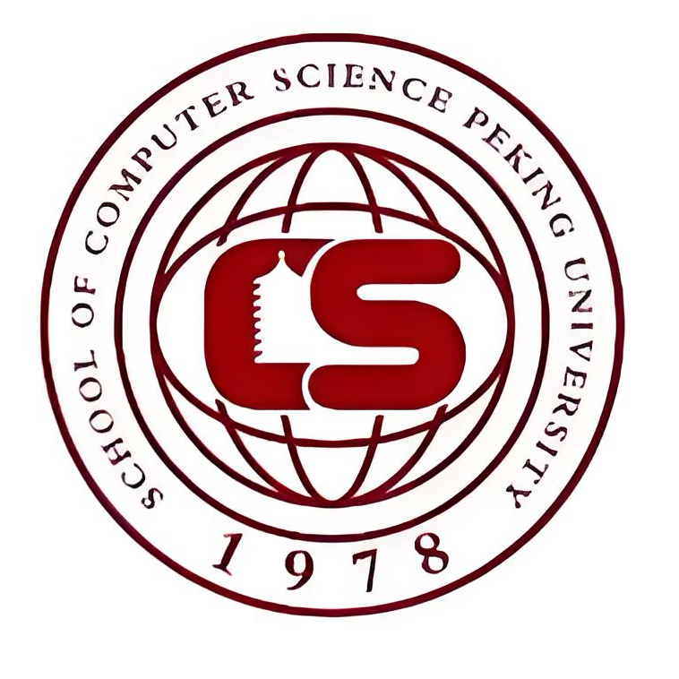

Bolin Li | 李博林

I am an undergraduate student at Peking University . My research interest is broadly in Robotics, Vision-Language-Action (VLA) models, Reinforcement Learning (RL), World Action Models (WAM) and prompt learning, with particular interests in test-time adaptation for VLA models currently.
I am also a language major student, so I am also interested in computational linguistics. I can speak Chinese, English, Japanese, French, Korean and Spanish.
It is worth mentioning that I have a twin brother named Bowen Li, as our experiences have shown that we are frequently mistaken for one another.🤣
Education

Experience & Services
- 2026.5-present: Humanities + AI Certificate Enhancement Program
- 2025.1–present: Member of Peking University's Tianjin Admissions Group
- 2024.9–2026.6: Member of The Communist Youth League, Peking University
- 2024.9–2025.6: Member of Peking University Students' Union
- 2024: College Entrance Examination Score: 688/750, Admitted to Peking University
Before 2024
- 2023: Awards in National High School Physics Olympiad
- 2023: Awards in National High School Mathematics League
- 2023: High ranking in THU CSSAT
- 2021: Guaranteed admission to the Science Experimental Class of YangCun No.1 Middle School
- 2019: Exemplary Youth of the New Era (12/year)
- 2019: YongYang Scholarship (40/year)
- 2018: Entered Tianjin YongYang Middle School with rank 17/4000+
Miscellaneous
I am also interested in soccer, table tennis, badminton, short-track speed skating and playing the piano. In junior high school, I obtained the piano level 10. As a crazy soccer lover, I am a big fan of Barcelona and Spain, and I am capable of playing as a winger and CAM. Besides, I also love comedy; previously I wrote lots of comedies. As my MBTI is ENTJ, I love making conversations interesting.